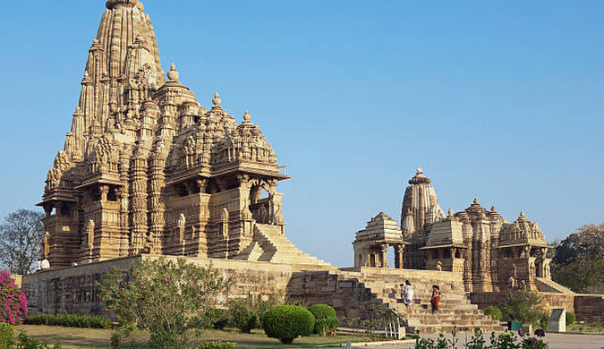
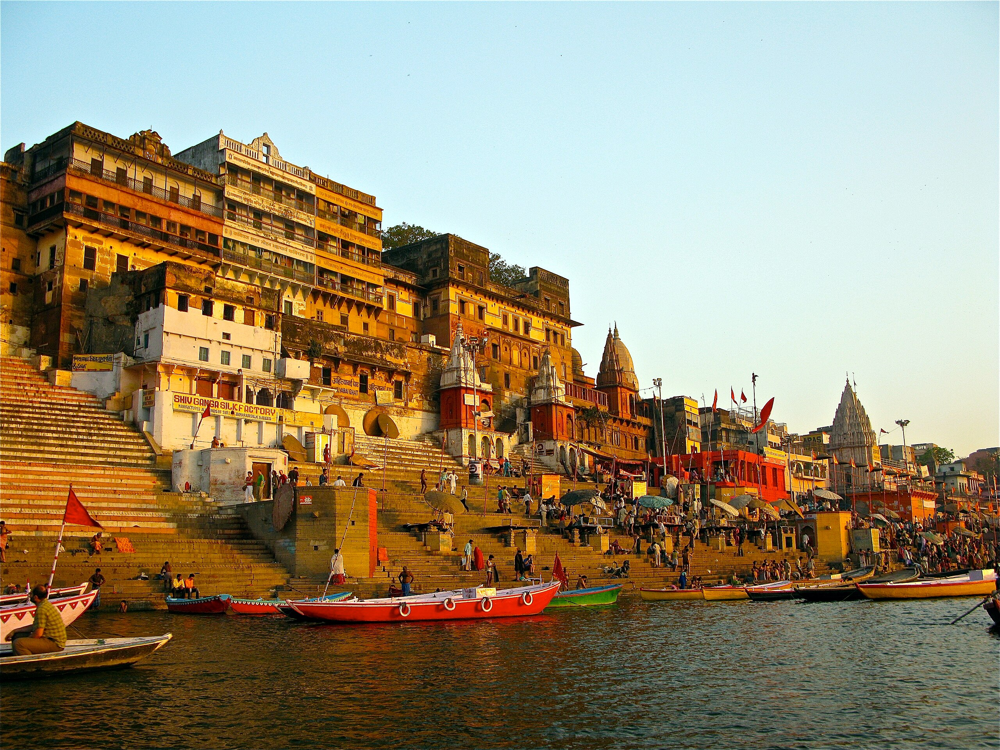

Khajuraho

Khajuraho Temples, built between 950 and 1050 AD, are a group of UNESCO World Heritage Sites in Madhya Pradesh, India. Renowned for their intricate erotic sculptures, these medieval Hindu and Jain temples showcase the architectural brilliance of the Chandela dynasty. The Western Group, the most famous cluster, features stunning carvings depicting life, mythology, and spirituality. Despite their explicit nature, these sculptures are considered a celebration of love within the context of Hindu beliefs.
Orccha Fort

Orchha Fort, located in the town of Orchha in Madhya Pradesh, India, is a captivating architectural marvel that dates back to the 16th century. Constructed by the Bundela Rajput chief, Rudra Pratap Singh, the fort stands proudly on the banks of the Betwa River. The complex encompasses various structures, including palaces, temples, and cenotaphs, each reflecting a unique blend of Mughal and Rajput architectural styles.
The fort's notable structures include the Jahangir Mahal, a stunning palace built to welcome Emperor Jahangir, and the Raj Mahal, known for its vibrant murals and exquisite architecture. The Chaturbhuj Temple, dedicated to Lord Vishnu, is another highlight, showcasing intricate carvings and a commanding view of the surrounding landscape. Orchha Fort is not only a historical treasure but also a testament to the cultural fusion prevalent during its construction.
Ahilyabai Ghats

Ahilyabai Ghats, located along the banks of the Narmada River in Maheshwar, Madhya Pradesh, are a series of picturesque and serene riverfront steps named after Queen Ahilyabai Holkar. Queen Ahilyabai Holkar, the 18th-century ruler of the Holkar dynasty, is revered for her contributions to the development of Maheshwar.
The ghats are characterized by their architectural beauty, featuring temples, shrines, and bathing areas. Among the notable structures is the Ahilyeshwar Temple, dedicated to Lord Shiva. Pilgrims and visitors flock to the ghats for spiritual rituals, holy dips, and the enchanting views of the Narmada. The tranquil ambiance and cultural significance make Ahilyabai Ghats a revered destination, reflecting the historical and religious importance associated with the region.